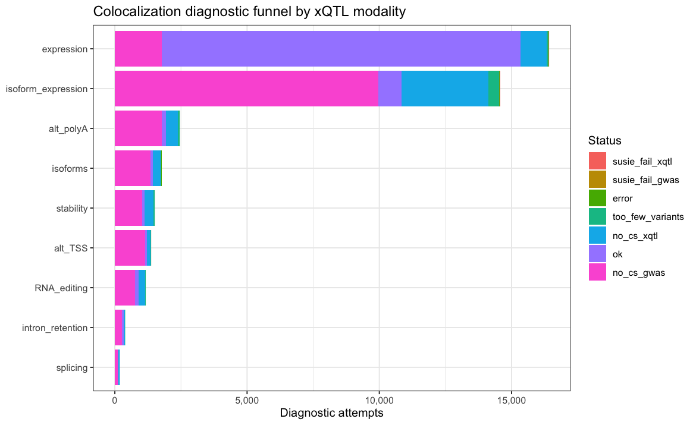
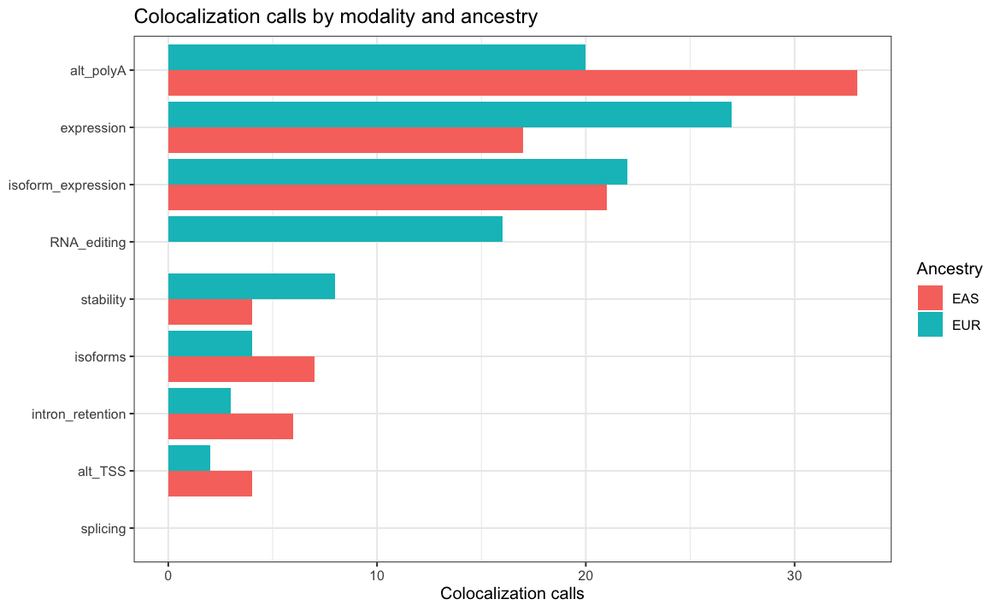
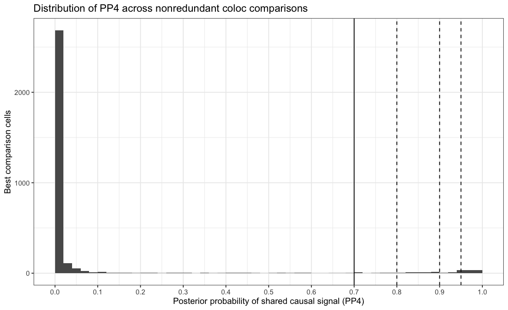
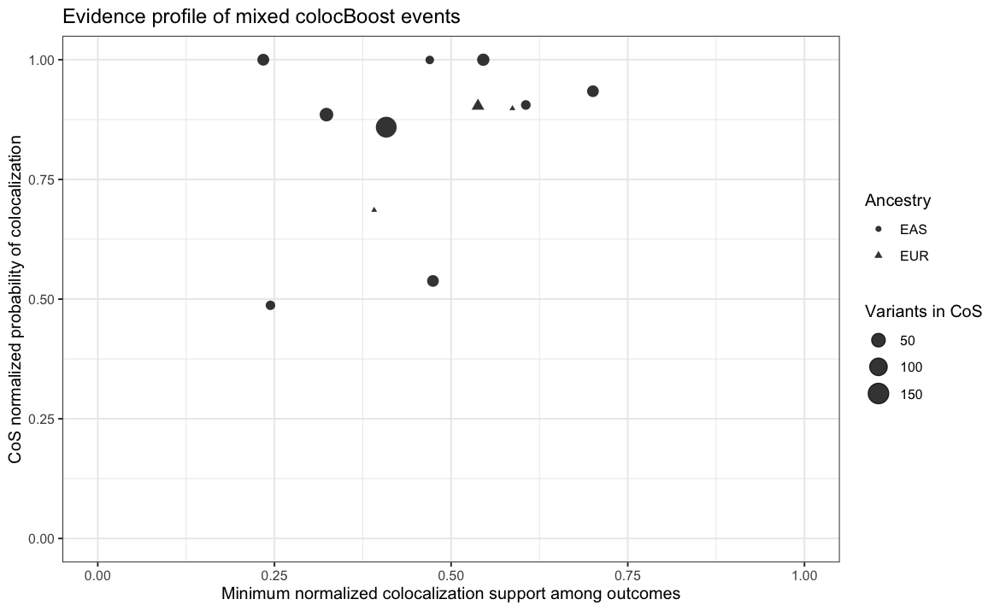
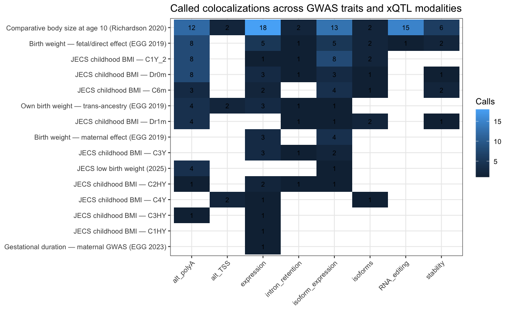
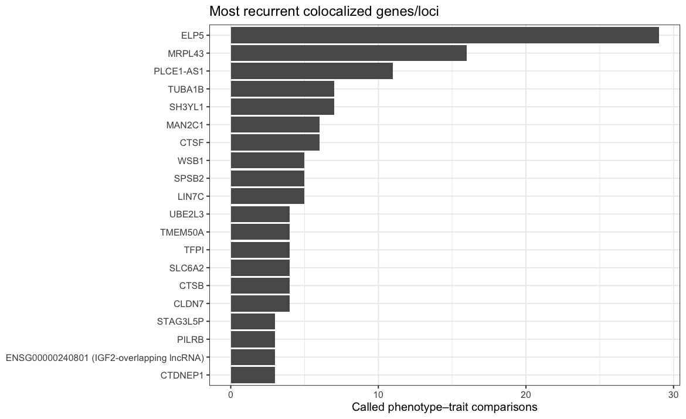

5 GWAS colocalization
Book chapter rebuilt locally from reports/report_colocalization.Rmd.
5.1 Executive summary
This report describes cross-ancestry colocalization between placental cis-xQTL signals and GWAS traits spanning birth weight, gestational duration, and childhood anthropometry. Colocalization is performed in a multiple-causal-signal framework: SuSiE decomposes each xQTL and GWAS locus into credible-set signals, and coloc evaluates each signal pair.
The supplied aggregate contains 39,822 diagnostic attempts. After
successful SuSiE signal construction and aggregation,
coloc_best.tsv.gz contains 3,192 nonredundant xQTL-feature ×
GWAS-trait × ancestry comparisons, one row for the signal-pair with
the highest PP4 in each comparison cell.
Headline result. 194 comparisons are called colocalized by the
supplied coloc_call flag, spanning 66 primary gene IDs, 139
molecular phenotypes, and 15 GWAS traits. Calls divide into 92
EAS and 102 EUR comparisons. Increasing the posterior threshold
leaves 167 PP4 ≥ 0.80, 115 PP4 ≥ 0.90, and 87 PP4 ≥ 0.95
comparisons.
The colocBoost aggregate adds 564 total colocalization-confidence-set (CoS) rows. 12 CoS events contain both placental xQTL and GWAS outcomes, representing 22 ancestry-matched gene–trait pairs across 13 genes and 12 GWAS traits. Of those pairs, 7 are also called by pairwise SuSiE-coloc and 15 are colocBoost-only, emphasizing complementarity rather than interchangeability of the two methods.
The dominant regulatory layers are alternative polyadenylation, expression, and isoform expression. The strongest recurrent locus is the chromosome 17p13 region containing ELP5, CLDN7, and CTDNEP1, which colocalizes with birth-weight and early-childhood anthropometric traits through multiple placental molecular readouts. Other recurrent signals include MRPL43, PLCE1-AS1, SH3YL1, WSB1, TFPI, CTSB, and an IGF2-overlapping composite stability phenotype.
No exact (modality, molecular phenotype, GWAS trait) call is shared
between EAS and EUR, and no primary gene–trait call is shared across
both ancestries. This is a major interpretive constraint: the atlas
identifies compelling ancestry-stratified shared-signal candidates, not
a catalog of cross-ancestry replicated colocalizations.
5.2 Methods
5.2.1 What SuSiE-coloc asks
For a pair of association signals, the coloc posterior partitions evidence among five hypotheses:
- H0: neither trait is associated in the locus;
- H1: xQTL only;
- H2: GWAS only;
- H3: both traits are associated, but through distinct causal variants;
- H4: both traits are associated and share a causal variant.
The quantity emphasized here is PP.H4.abf (PP4). In a SuSiE-based
analysis, multiple signals can exist within each locus. Each xQTL
credible set can therefore be compared with each GWAS credible set; the
full CS-pair output is stored in coloc_results.tsv.gz.
5.2.2 What colocBoost adds
colocBoost is a multi-trait colocalization framework that jointly models many molecular/GWAS outcomes and can accommodate multiple causal variants within a region. Its primary output is a colocalization confidence set (CoS): a set of variants and a configuration of outcomes inferred to share a causal effect.
This report defines a mixed xQTL–GWAS event as a CoS whose
colocalized_outcomes contains at least one placental xQTL outcome and
at least one gwas: outcome. Gene–trait pairs are generated only within
those mixed events.
The colocBoost metrics are deliberately not converted into a PP4-like
threshold. In particular, purity is an LD property of the CoS (minimum
absolute within-set correlation), not a posterior probability of
colocalization. cos_npc summarizes normalized colocalization support
for the event, while min_npc_outcome reports the weakest normalized
support among outcomes in the configuration. top_variable_vcp is the
top variant’s colocalization probability. These quantities complement
rather than numerically replace SuSiE-coloc PP4.
5.2.3 Why headline counts use coloc_best.tsv.gz
The full aggregate has 4,314 CS-pair rows but only 3,192 unique xQTL-feature × trait × ancestry cells. Counting every CS pair as an independent biological result would inflate loci that contain multiple signals. Therefore:
coloc_results.tsv.gzis used for signal-pair diagnostics;coloc_best.tsv.gzsupplies one maximum-PP4 signal pair per comparison cell;- all headline call counts and gene/trait summaries use
coloc_best.tsv.gz.
The supplied call flag is exactly equivalent to PP4 ≥ 0.7 in this aggregate.
A matching lead variant (hit1 == hit2) is supportive but is not
required for H4: two association signals can share a causal variant
even when their marginal/credible-set lead variants differ because of LD
and sampling variation.
5.2.4 Gene and trait annotation
Primary gene IDs are parsed from the leading Ensembl gene ID in each
molecular phenotype. If gene_map_path exists, its symbols are used.
Otherwise the report falls back to Ensembl IDs plus a small curated
symbol map for the most recurrent loci.
JECS phenotype codes are deliberately preserved in trait labels because the aggregate files do not include a complete phenotype dictionary for every code. The report does not infer age or measurement source beyond what is explicitly encoded in the supplied IDs.
5.3 Input landscape and diagnostic funnel
5.3.1 Diagnostic outcomes
| status | n | fraction |
|---|---|---|
| no_cs_gwas | 18232 | 0.458 |
| ok | 15000 | 0.377 |
| no_cs_xqtl | 5823 | 0.146 |
| too_few_variants | 695 | 0.017 |
| error | 36 | 0.001 |
| susie_fail_gwas | 28 | 0.001 |
| susie_fail_xqtl | 8 | 0.000 |
Colocalization preparation/SuSiE diagnostic outcomes across all attempted modality–locus–trait cells.

The most common failure modes are absence of a SuSiE credible set on the
GWAS side (no_cs_gwas) or xQTL side (no_cs_xqtl). These categories
should be viewed as lack of a resolved signal for coloc rather than
evidence against a shared causal variant.
| modality | error | no_cs_gwas | no_cs_xqtl | ok | too_few_variants | susie_fail_gwas | susie_fail_xqtl |
|---|---|---|---|---|---|---|---|
| RNA_editing | 1 | 772 | 243 | 134 | 25 | 0 | 0 |
| alt_TSS | 1 | 1,151 | 132 | 55 | 39 | 1 | 1 |
| alt_polyA | 4 | 1,784 | 443 | 146 | 67 | 0 | 1 |
| expression | 1 | 1,783 | 994 | 13,552 | 75 | 7 | 2 |
| intron_retention | 1 | 273 | 53 | 54 | 8 | 2 | 0 |
| isoform_expression | 22 | 9,973 | 3,283 | 867 | 402 | 15 | 4 |
| isoforms | 5 | 1,342 | 284 | 100 | 36 | 0 | 0 |
| splicing | 0 | 111 | 44 | 13 | 9 | 0 | 0 |
| stability | 1 | 1,043 | 347 | 79 | 34 | 3 | 0 |
Diagnostic-status counts by modality.
5.4 Colocalization landscape
5.4.1 Calls by molecular modality
| modality | tested_cells | coloc_calls | call_rate | pp4_ge_0_80 | pp4_ge_0_90 | pp4_ge_0_95 |
|---|---|---|---|---|---|---|
| alt_polyA | 416 | 53 | 12.7% | 49 | 42 | 32 |
| expression | 909 | 44 | 4.8% | 36 | 20 | 14 |
| isoform_expression | 1174 | 43 | 3.7% | 37 | 22 | 16 |
| RNA_editing | 140 | 16 | 11.4% | 11 | 7 | 6 |
| stability | 126 | 12 | 9.5% | 12 | 9 | 7 |
| isoforms | 221 | 11 | 5.0% | 11 | 8 | 6 |
| intron_retention | 83 | 9 | 10.8% | 8 | 5 | 5 |
| alt_TSS | 110 | 6 | 5.5% | 3 | 2 | 1 |
| splicing | 13 | 0 | 0.0% | 0 | 0 | 0 |
Nonredundant best-pair colocalization results by molecular modality.

Alternative polyadenylation contributes the largest number of calls,
followed by gene expression and isoform expression. The absence of
splicing calls should not be interpreted as proof that splicing does not
mediate GWAS associations: only a small number of splicing comparisons
reach the successful ok/best-result layer.
5.4.2 Posterior strength

| PP4_threshold | n_comparisons | fraction_of_best |
|---|---|---|
| 0.70 | 194 | 6.08% |
| 0.80 | 167 | 5.23% |
| 0.90 | 115 | 3.60% |
| 0.95 | 87 | 2.73% |
Sensitivity of the catalog size to increasingly stringent PP4 thresholds.
A PP4 ≥0.70 threshold is intentionally inclusive. Results with PP4 ≥0.90 or 0.95 provide a more conservative high-confidence subset for biological follow-up.
5.5 Multi-trait colocalization with colocBoost
The colocBoost aggregate contains 564 CoS rows, of which 12 jointly include at least one placental xQTL and one GWAS outcome. These mixed events yield 22 ancestry-matched gene–trait pairs.
| ancestry | genes | gwas_traits | cos_npc | min_npc_outcome | purity | top_variable | top_variable_vcp | n_variables | n_gene_trait_pairs | n_susie_pairs |
|---|---|---|---|---|---|---|---|---|---|---|
| EAS | SH3YL1 | JECS childhood BMI — C1Y_1; JECS childhood BMI — C3Y; JECS childhood BMI — C4Y; JECS childhood BMI — Dr1m | 1.0000 | 0.5455 | 0.9710 | 2:272203:C:T | 0.0396 | 37 | 4 | 0 |
| EAS | RBIS | JECS childhood BMI — C2Y | 1.0000 | 0.2342 | 0.9394 | 8:85218399:A:G | 0.1214 | 33 | 1 | 0 |
| EAS | PLCE1-AS1 | JECS childhood BMI — C1Y_1; JECS childhood BMI — C1Y_2; JECS childhood BMI — C3HY; JECS childhood BMI — C6m; JECS childhood BMI — Dr1m | 0.9995 | 0.4698 | 0.9052 | 10:94259744:A:G | 0.1647 | 11 | 5 | 3 |
| EAS | FAP | JECS childhood BMI — C1HY | 0.9342 | 0.7007 | 0.9925 | 2:162249543:C:T | 0.1880 | 32 | 1 | 0 |
| EAS | BCKDHB | JECS childhood BMI — C3Y; JECS childhood BMI — C4Y | 0.9055 | 0.6057 | 0.9430 | 6:80278629:A:G | 0.2154 | 17 | 2 | 1 |
| EUR | C3orf38 | Comparative body size at age 10 (Richardson 2020) | 0.9033 | 0.5380 | 0.9920 | 3:88124606:A:G | 0.1572 | 16 | 1 | 1 |
| EUR | FES | Birth weight — maternal effect (EGG 2019) | 0.8982 | 0.5868 | 1.0000 | 15:90885812:G:A | 1.0000 | 1 | 1 | 0 |
| EAS | MRPL18, TCP1 | JECS childhood BMI — C1Y_2 | 0.8853 | 0.3236 | 0.9764 | 6:159757557:C:T | 0.0897 | 50 | 2 | 0 |
| EAS | ARF4 | JECS childhood BMI — C1Y_1; JECS childhood BMI — C6m | 0.8591 | 0.4082 | 0.8247 | 3:57449423:C:T | 0.0272 | 156 | 2 | 0 |
| EUR | FUBP1 | Comparative body size at age 10 (Richardson 2020) | 0.6858 | 0.3911 | 1.0000 | 1:77984833:C:A | 1.0000 | 1 | 1 | 1 |
| EAS | NPEPL1 | JECS childhood BMI — C2HY | 0.5379 | 0.4743 | 0.7059 | 20:58697001:C:T | 0.0578 | 32 | 1 | 0 |
| EAS | GCLM | JECS childhood BMI — C1Y_2 | 0.4870 | 0.2443 | 0.9819 | 1:93883521:A:C | 0.1965 | 16 | 1 | 1 |
Mixed placental xQTL–GWAS colocBoost events. Purity describes LD coherence of the CoS; it is not a colocalization posterior.

5.5.1 Multi-GWAS developmental hotspots
The clearest added value of colocBoost is that one event can directly contain several GWAS traits. In the supplied aggregate, SH3YL1 forms an EAS event that couples multiple placental molecular modalities with four JECS childhood-BMI outcomes. PLCE1-AS1 forms another EAS event connecting isoform/poly(A) regulation with five JECS BMI outcomes. These should be interpreted as shared developmental-growth regulatory configurations, not as an equivalent number of independent causal variants.
Other mixed events include FAP, C3orf38, FES, FUBP1, GCLM, MRPL18/TCP1, BCKDHB, RBIS, ARF4, and NPEPL1. The FES–maternal-birth-weight event is particularly notable because prior placental multi-omics independently prioritized FES as a birth-weight effector candidate.
5.5.2 Concordance with pairwise SuSiE-coloc
| ancestry | gene_label | gene_id | trait_label | cb_modalities | cos_npc | min_npc_outcome | purity | top_variable | susie_coloc |
|---|---|---|---|---|---|---|---|---|---|
| EAS | PLCE1-AS1 | ENSG00000268894 | JECS childhood BMI — C1Y_2 | alt_polyA;isoforms | 0.9995 | 0.4698 | 0.9052 | 10:94259744:A:G | TRUE |
| EAS | PLCE1-AS1 | ENSG00000268894 | JECS childhood BMI — C3HY | alt_polyA;isoforms | 0.9995 | 0.4698 | 0.9052 | 10:94259744:A:G | TRUE |
| EAS | PLCE1-AS1 | ENSG00000268894 | JECS childhood BMI — C6m | alt_polyA;isoforms | 0.9995 | 0.4698 | 0.9052 | 10:94259744:A:G | TRUE |
| EAS | BCKDHB | ENSG00000083123 | JECS childhood BMI — C4Y | expression | 0.9055 | 0.6057 | 0.9430 | 6:80278629:A:G | TRUE |
| EUR | C3orf38 | ENSG00000179021 | Comparative body size at age 10 (Richardson 2020) | expression;isoform_expression | 0.9033 | 0.5380 | 0.9920 | 3:88124606:A:G | TRUE |
| EUR | FUBP1 | ENSG00000162613 | Comparative body size at age 10 (Richardson 2020) | expression;isoform_expression | 0.6858 | 0.3911 | 1.0000 | 1:77984833:C:A | TRUE |
| EAS | GCLM | ENSG00000023909 | JECS childhood BMI — C1Y_2 | isoform_expression | 0.4870 | 0.2443 | 0.9819 | 1:93883521:A:C | TRUE |
| EAS | SH3YL1 | ENSG00000035115 | JECS childhood BMI — C1Y_1 | alt_polyA;expression;isoform_expression;isoforms;stability | 1.0000 | 0.5455 | 0.9710 | 2:272203:C:T | FALSE |
| EAS | SH3YL1 | ENSG00000035115 | JECS childhood BMI — C3Y | alt_polyA;expression;isoform_expression;isoforms;stability | 1.0000 | 0.5455 | 0.9710 | 2:272203:C:T | FALSE |
| EAS | SH3YL1 | ENSG00000035115 | JECS childhood BMI — C4Y | alt_polyA;expression;isoform_expression;isoforms;stability | 1.0000 | 0.5455 | 0.9710 | 2:272203:C:T | FALSE |
| EAS | SH3YL1 | ENSG00000035115 | JECS childhood BMI — Dr1m | alt_polyA;expression;isoform_expression;isoforms;stability | 1.0000 | 0.5455 | 0.9710 | 2:272203:C:T | FALSE |
| EAS | RBIS | ENSG00000176731 | JECS childhood BMI — C2Y | alt_TSS;isoform_expression;isoforms | 1.0000 | 0.2342 | 0.9394 | 8:85218399:A:G | FALSE |
| EAS | PLCE1-AS1 | ENSG00000268894 | JECS childhood BMI — C1Y_1 | alt_polyA;isoforms | 0.9995 | 0.4698 | 0.9052 | 10:94259744:A:G | FALSE |
| EAS | PLCE1-AS1 | ENSG00000268894 | JECS childhood BMI — Dr1m | alt_polyA;isoforms | 0.9995 | 0.4698 | 0.9052 | 10:94259744:A:G | FALSE |
| EAS | FAP | ENSG00000078098 | JECS childhood BMI — C1HY | expression;isoform_expression | 0.9342 | 0.7007 | 0.9925 | 2:162249543:C:T | FALSE |
| EAS | BCKDHB | ENSG00000083123 | JECS childhood BMI — C3Y | expression | 0.9055 | 0.6057 | 0.9430 | 6:80278629:A:G | FALSE |
| EUR | FES | ENSG00000182511 | Birth weight — maternal effect (EGG 2019) | expression;isoform_expression | 0.8982 | 0.5868 | 1.0000 | 15:90885812:G:A | FALSE |
| EAS | MRPL18 | ENSG00000112110 | JECS childhood BMI — C1Y_2 | isoform_expression;isoforms | 0.8853 | 0.3236 | 0.9764 | 6:159757557:C:T | FALSE |
| EAS | TCP1 | ENSG00000120438 | JECS childhood BMI — C1Y_2 | RNA_editing | 0.8853 | 0.3236 | 0.9764 | 6:159757557:C:T | FALSE |
| EAS | ARF4 | ENSG00000168374 | JECS childhood BMI — C1Y_1 | isoform_expression | 0.8591 | 0.4082 | 0.8247 | 3:57449423:C:T | FALSE |
| EAS | ARF4 | ENSG00000168374 | JECS childhood BMI — C6m | isoform_expression | 0.8591 | 0.4082 | 0.8247 | 3:57449423:C:T | FALSE |
| EAS | NPEPL1 | ENSG00000215440 | JECS childhood BMI — C2HY | stability | 0.5379 | 0.4743 | 0.7059 | 20:58697001:C:T | FALSE |
Gene–trait pairs represented in mixed colocBoost events and whether the same ancestry/gene/trait is also called by SuSiE-coloc.
Of 22 mixed-event gene–trait pairs, 7 overlap a called pairwise SuSiE-coloc result and 15 are colocBoost-only. The non-overlap is expected: pairwise SuSiE-coloc and joint multi-trait boosting have different statistical targets, signal decompositions, and sensitivity. The strongest interpretation is method convergence when both agree, followed by careful review of colocBoost-only configurations rather than treating them as failures of pairwise coloc.
5.6 GWAS trait landscape
5.6.1 Calls by trait
| trait_label | trait_class | tested_cells | coloc_calls | eas_calls | eur_calls | max_pp4 |
|---|---|---|---|---|---|---|
| Comparative body size at age 10 (Richardson 2020) | Childhood anthropometry | 879 | 70 | 0 | 70 | 0.9975 |
| Birth weight — fetal/direct effect (EGG 2019) | Birth weight | 134 | 24 | 0 | 24 | 0.9998 |
| JECS childhood BMI — C1Y_2 | Childhood anthropometry | 177 | 20 | 20 | 0 | 0.9536 |
| JECS childhood BMI — Dr0m | Childhood anthropometry | 191 | 17 | 17 | 0 | 0.9747 |
| JECS childhood BMI — C6m | Childhood anthropometry | 247 | 12 | 12 | 0 | 0.9715 |
| Own birth weight — trans-ancestry (EGG 2019) | Birth weight | 64 | 11 | 11 | 0 | 1.0000 |
| JECS childhood BMI — Dr1m | Childhood anthropometry | 86 | 9 | 9 | 0 | 0.9804 |
| Birth weight — maternal effect (EGG 2019) | Birth weight | 133 | 7 | 0 | 7 | 0.9667 |
| JECS childhood BMI — C3Y | Childhood anthropometry | 175 | 6 | 6 | 0 | 0.8937 |
| JECS low birth weight (2025) | Birth weight | 41 | 5 | 5 | 0 | 0.9778 |
| JECS childhood BMI — C2HY | Childhood anthropometry | 190 | 5 | 5 | 0 | 0.8201 |
| JECS childhood BMI — C4Y | Childhood anthropometry | 181 | 4 | 4 | 0 | 0.9487 |
| JECS childhood BMI — C3HY | Childhood anthropometry | 163 | 2 | 2 | 0 | 0.9155 |
| JECS childhood BMI — C1HY | Childhood anthropometry | 155 | 1 | 1 | 0 | 0.7520 |
| Gestational duration — maternal GWAS (EGG 2023) | Gestational duration | 41 | 1 | 0 | 1 | 0.7003 |
| JECS childhood BMI — C2Y | Childhood anthropometry | 206 | 0 | 0 | 0 | 0.6782 |
| JECS childhood BMI — C1Y_1 | Childhood anthropometry | 129 | 0 | 0 | 0 | 0.5165 |
Colocalization calls by GWAS trait.

The catalog is dominated numerically by childhood-body-size/BMI and birth-weight traits. This reflects both biological overlap and the GWAS resources supplied to the pipeline; counts across traits are not directly comparable measures of biological importance because GWAS sample size, ancestry, power, and locus density differ.
5.7 Birth-weight and early-growth colocalization
| ancestry | modality | gene_label | phenotype_id | trait_label | hit1 | hit2 | same_lead | PP.H3.abf | PP.H4.abf |
|---|---|---|---|---|---|---|---|---|---|
| EAS | alt_polyA | ELP5 | ENSG00000170291.16__grp_2_downstream_ENST00000574255.6 | Own birth weight — trans-ancestry (EGG 2019) | 17:7278141:A:G | 17:7278141:A:G | TRUE | 0.00000 | 1.00000 |
| EAS | alt_polyA | ELP5 | ENSG00000170291.16__grp_1_downstream_ENST00000574255.6 | Own birth weight — trans-ancestry (EGG 2019) | 17:7278141:A:G | 17:7278141:A:G | TRUE | 0.00000 | 1.00000 |
| EAS | isoform_expression | ELP5 | ENSG00000170291.16__ENST00000574255.6 | Own birth weight — trans-ancestry (EGG 2019) | 17:7278141:A:G | 17:7278141:A:G | TRUE | 0.00000 | 1.00000 |
| EAS | alt_polyA | ELP5 | ENSG00000170291.16__grp_2_downstream_ENST00000396628.7 | Own birth weight — trans-ancestry (EGG 2019) | 17:7278141:A:G | 17:7278141:A:G | TRUE | 0.00000 | 0.99995 |
| EAS | alt_polyA | ELP5 | ENSG00000170291.16__grp_1_downstream_ENST00000396628.7 | Own birth weight — trans-ancestry (EGG 2019) | 17:7278141:A:G | 17:7278141:A:G | TRUE | 0.00000 | 0.99989 |
| EUR | alt_polyA | ELP5 | ENSG00000170291.16__grp_2_downstream_ENST00000574255.6 | Birth weight — fetal/direct effect (EGG 2019) | 17:7259132:G:A | 17:7259132:G:A | TRUE | 0.00020 | 0.99978 |
| EUR | isoform_expression | ELP5 | ENSG00000170291.16__ENST00000574255.6 | Birth weight — fetal/direct effect (EGG 2019) | 17:7259132:G:A | 17:7259132:G:A | TRUE | 0.00020 | 0.99978 |
| EUR | alt_polyA | ELP5 | ENSG00000170291.16__grp_1_downstream_ENST00000574255.6 | Birth weight — fetal/direct effect (EGG 2019) | 17:7259132:G:A | 17:7259132:G:A | TRUE | 0.00020 | 0.99978 |
| EUR | alt_polyA | ELP5 | ENSG00000170291.16__grp_2_downstream_ENST00000396628.7 | Birth weight — fetal/direct effect (EGG 2019) | 17:7259132:G:A | 17:7259132:G:A | TRUE | 0.00020 | 0.99978 |
| EUR | alt_polyA | CLDN7 | ENSG00000181885.18__grp_2_downstream_ENST00000397317.8 | Birth weight — fetal/direct effect (EGG 2019) | 17:7259132:G:A | 17:7259132:G:A | TRUE | 0.00021 | 0.99977 |
| EUR | alt_polyA | ELP5 | ENSG00000170291.16__grp_1_downstream_ENST00000396628.7 | Birth weight — fetal/direct effect (EGG 2019) | 17:7259132:G:A | 17:7259132:G:A | TRUE | 0.00021 | 0.99977 |
| EUR | alt_polyA | CLDN7 | ENSG00000181885.18__grp_1_downstream_HPLRT_d669097cd45 | Birth weight — fetal/direct effect (EGG 2019) | 17:7259132:G:A | 17:7259132:G:A | TRUE | 0.00022 | 0.99976 |
| EUR | isoforms | ELP5 | ENSG00000170291.16__ENST00000574993.6 | Birth weight — fetal/direct effect (EGG 2019) | 17:7259132:G:A | 17:7259132:G:A | TRUE | 0.00042 | 0.99956 |
| EUR | expression | CLDN7 | ENSG00000181885.18 | Birth weight — fetal/direct effect (EGG 2019) | 17:7259132:G:A | 17:7259132:G:A | TRUE | 0.00070 | 0.99922 |
| EUR | RNA_editing | WSB1 | ENSG00000109046.15__chr17_27313055 | Birth weight — fetal/direct effect (EGG 2019) | 17:27310317:G:A | 17:27310317:G:A | TRUE | 0.00001 | 0.99703 |
| EUR | intron_retention | WSB1 | ENSG00000109046.15_IR_ENSG00000109046_chr17_27294436_27297186+_35681 | Birth weight — fetal/direct effect (EGG 2019) | 17:27310317:G:A | 17:27310317:G:A | TRUE | 0.00001 | 0.99703 |
| EUR | isoforms | WSB1 | ENSG00000109046.15__ENST00000487603.5 | Birth weight — fetal/direct effect (EGG 2019) | 17:27310317:G:A | 17:27310317:G:A | TRUE | 0.00001 | 0.99702 |
| EUR | stability | WSB1 | ENSG00000109046.15 | Birth weight — fetal/direct effect (EGG 2019) | 17:27310317:G:A | 17:27310317:G:A | TRUE | 0.00001 | 0.99700 |
| EUR | isoform_expression | WSB1 | ENSG00000109046.15__ENST00000487603.5 | Birth weight — fetal/direct effect (EGG 2019) | 17:27310317:G:A | 17:27310317:G:A | TRUE | 0.00001 | 0.99695 |
| EUR | expression | ELP5 | ENSG00000170291.16 | Birth weight — fetal/direct effect (EGG 2019) | 17:7259132:G:A | 17:7259132:G:A | TRUE | 0.00334 | 0.99499 |
| EUR | alt_polyA | CLDN7 | ENSG00000181885.18__grp_2_downstream_ENST00000360325.11 | Birth weight — fetal/direct effect (EGG 2019) | 17:7259132:G:A | 17:7259132:G:A | TRUE | 0.00055 | 0.99298 |
| EAS | alt_TSS | ACADVL | ENSG00000072778.20__grp_1_upstream_ENST00000578269.5 | Own birth weight — trans-ancestry (EGG 2019) | 17:7278141:A:G | 17:7278141:A:G | TRUE | 0.00002 | 0.98995 |
| EUR | alt_polyA | PLCE1-AS1 | ENSG00000268894.7__grp_1_downstream_HPLRT_f9eb075b81a | Birth weight — fetal/direct effect (EGG 2019) | 10:94276549:G:A | 10:94278929:G:A | FALSE | 0.00710 | 0.98866 |
| EUR | stability | PLCE1-AS1 | ENSG00000268894.7 | Birth weight — fetal/direct effect (EGG 2019) | 10:94280637:G:A | 10:94278929:G:A | FALSE | 0.00718 | 0.98855 |
| EAS | expression | GNL3 | ENSG00000163938.17 | Own birth weight — trans-ancestry (EGG 2019) | 3:52585946:G:T | 3:52745575:C:T | FALSE | 0.01257 | 0.98564 |
| EAS | expression | DPY19L1 | ENSG00000173852.16 | Own birth weight — trans-ancestry (EGG 2019) | 7:35239149:A:G | 7:35238854:C:T | FALSE | 0.00332 | 0.98515 |
| EUR | isoform_expression | PLCE1-AS1 | ENSG00000268894.7__HPLRT_f9eb075b81a | Birth weight — fetal/direct effect (EGG 2019) | 10:94240405:G:A | 10:94278929:G:A | FALSE | 0.01419 | 0.97828 |
| EAS | alt_polyA | ELP5 | ENSG00000170291.16__grp_2_downstream_ENST00000396628.7 | JECS low birth weight (2025) | 17:7260420:A:G | 17:7234631:C:G | FALSE | 0.02213 | 0.97781 |
| EAS | alt_polyA | ELP5 | ENSG00000170291.16__grp_1_downstream_ENST00000396628.7 | JECS low birth weight (2025) | 17:7260420:A:G | 17:7234631:C:G | FALSE | 0.02323 | 0.97671 |
| EAS | isoform_expression | ELP5 | ENSG00000170291.16__ENST00000574255.6 | JECS low birth weight (2025) | 17:7260420:A:G | 17:7234631:C:G | FALSE | 0.02557 | 0.97436 |
| EAS | alt_polyA | ELP5 | ENSG00000170291.16__grp_2_downstream_ENST00000574255.6 | JECS low birth weight (2025) | 17:7254884:T:G | 17:7234631:C:G | FALSE | 0.02599 | 0.97394 |
| EAS | alt_polyA | ELP5 | ENSG00000170291.16__grp_1_downstream_ENST00000574255.6 | JECS low birth weight (2025) | 17:7258292:G:T | 17:7234631:C:G | FALSE | 0.02616 | 0.97377 |
| EAS | intron_retention | CTDNEP1 | ENSG00000175826.12_IR_ENSG00000175826_chr17_7243952_7244101-_44485 | Own birth weight — trans-ancestry (EGG 2019) | 17:7278141:A:G | 17:7278141:A:G | TRUE | 0.00010 | 0.96699 |
| EUR | expression | TUFM | ENSG00000178952.11 | Birth weight — maternal effect (EGG 2019) | 16:28484431:C:T | 16:28862077:G:A | FALSE | 0.01156 | 0.96673 |
| EAS | expression | ABO | ENSG00000175164.16 | Own birth weight — trans-ancestry (EGG 2019) | 9:133279427:T:C | 9:133271182:T:C | FALSE | 0.01848 | 0.96658 |
| EUR | expression | ATP6V1E2 | ENSG00000250565.7 | Birth weight — fetal/direct effect (EGG 2019) | 2:46479329:G:T | 2:46479329:G:T | TRUE | 0.00351 | 0.95004 |
| EUR | isoform_expression | PLCE1-AS1 | ENSG00000268894.7__HPLRT_f9eb075b81a | Birth weight — maternal effect (EGG 2019) | 10:94344329:G:A | 10:94302726:C:T | FALSE | 0.05304 | 0.94666 |
| EAS | alt_TSS | GNL3 | ENSG00000163938.17__grp_2_upstream_ENST00000394799.6 | Own birth weight — trans-ancestry (EGG 2019) | 3:52533778:A:C | 3:52745575:C:T | FALSE | 0.05552 | 0.94228 |
| EUR | isoform_expression | CTSF | ENSG00000174080.12__ENST00000530565.6 | Birth weight — fetal/direct effect (EGG 2019) | 11:66514624:G:A | 11:66531123:C:T | FALSE | 0.03937 | 0.89625 |
| EUR | isoform_expression | CTSF | ENSG00000174080.12__HPLRT_8eaf8fb3a6f | Birth weight — fetal/direct effect (EGG 2019) | 11:66504766:G:A | 11:66531123:C:T | FALSE | 0.03943 | 0.89610 |
Top birth-weight / low-birth-weight colocalization calls (up to 40 shown).
The strongest birth-weight locus is chromosome 17p13. Multiple molecular phenotypes attached to ELP5 and CLDN7 show near-certain colocalization with the EGG fetal/direct birth-weight signal in EUR; ELP5 and CTDNEP1 also colocalize with own birth weight or early JECS traits in EAS. Because these genes lie in the same compact locus, their repeated appearance should be treated as a regulatory hotspot rather than as proof that all three genes are independent birth-weight effectors.
| ancestry | modality | gene_label | phenotype_id | trait_label | hit1 | hit2 | same_lead | PP.H4.abf | PP.H3.abf |
|---|---|---|---|---|---|---|---|---|---|
| EAS | alt_polyA | ELP5 | ENSG00000170291.16__grp_2_downstream_ENST00000574255.6 | Own birth weight — trans-ancestry (EGG 2019) | 17:7278141:A:G | 17:7278141:A:G | TRUE | 1.000000 | 0.000000 |
| EAS | alt_polyA | ELP5 | ENSG00000170291.16__grp_1_downstream_ENST00000574255.6 | Own birth weight — trans-ancestry (EGG 2019) | 17:7278141:A:G | 17:7278141:A:G | TRUE | 1.000000 | 0.000000 |
| EAS | isoform_expression | ELP5 | ENSG00000170291.16__ENST00000574255.6 | Own birth weight — trans-ancestry (EGG 2019) | 17:7278141:A:G | 17:7278141:A:G | TRUE | 0.999996 | 0.000000 |
| EAS | alt_polyA | ELP5 | ENSG00000170291.16__grp_2_downstream_ENST00000396628.7 | Own birth weight — trans-ancestry (EGG 2019) | 17:7278141:A:G | 17:7278141:A:G | TRUE | 0.999948 | 0.000000 |
| EAS | alt_polyA | ELP5 | ENSG00000170291.16__grp_1_downstream_ENST00000396628.7 | Own birth weight — trans-ancestry (EGG 2019) | 17:7278141:A:G | 17:7278141:A:G | TRUE | 0.999889 | 0.000000 |
| EUR | alt_polyA | ELP5 | ENSG00000170291.16__grp_2_downstream_ENST00000574255.6 | Birth weight — fetal/direct effect (EGG 2019) | 17:7259132:G:A | 17:7259132:G:A | TRUE | 0.999783 | 0.000200 |
| EUR | isoform_expression | ELP5 | ENSG00000170291.16__ENST00000574255.6 | Birth weight — fetal/direct effect (EGG 2019) | 17:7259132:G:A | 17:7259132:G:A | TRUE | 0.999783 | 0.000200 |
| EUR | alt_polyA | ELP5 | ENSG00000170291.16__grp_1_downstream_ENST00000574255.6 | Birth weight — fetal/direct effect (EGG 2019) | 17:7259132:G:A | 17:7259132:G:A | TRUE | 0.999783 | 0.000200 |
| EUR | alt_polyA | ELP5 | ENSG00000170291.16__grp_2_downstream_ENST00000396628.7 | Birth weight — fetal/direct effect (EGG 2019) | 17:7259132:G:A | 17:7259132:G:A | TRUE | 0.999783 | 0.000200 |
| EUR | alt_polyA | CLDN7 | ENSG00000181885.18__grp_2_downstream_ENST00000397317.8 | Birth weight — fetal/direct effect (EGG 2019) | 17:7259132:G:A | 17:7259132:G:A | TRUE | 0.999770 | 0.000211 |
| EUR | alt_polyA | ELP5 | ENSG00000170291.16__grp_1_downstream_ENST00000396628.7 | Birth weight — fetal/direct effect (EGG 2019) | 17:7259132:G:A | 17:7259132:G:A | TRUE | 0.999769 | 0.000212 |
| EUR | alt_polyA | CLDN7 | ENSG00000181885.18__grp_1_downstream_HPLRT_d669097cd45 | Birth weight — fetal/direct effect (EGG 2019) | 17:7259132:G:A | 17:7259132:G:A | TRUE | 0.999762 | 0.000218 |
| EUR | isoforms | ELP5 | ENSG00000170291.16__ENST00000574993.6 | Birth weight — fetal/direct effect (EGG 2019) | 17:7259132:G:A | 17:7259132:G:A | TRUE | 0.999561 | 0.000420 |
| EUR | expression | CLDN7 | ENSG00000181885.18 | Birth weight — fetal/direct effect (EGG 2019) | 17:7259132:G:A | 17:7259132:G:A | TRUE | 0.999224 | 0.000697 |
| EUR | expression | ELP5 | ENSG00000170291.16 | Birth weight — fetal/direct effect (EGG 2019) | 17:7259132:G:A | 17:7259132:G:A | TRUE | 0.994988 | 0.003336 |
| EUR | alt_polyA | CLDN7 | ENSG00000181885.18__grp_2_downstream_ENST00000360325.11 | Birth weight — fetal/direct effect (EGG 2019) | 17:7259132:G:A | 17:7259132:G:A | TRUE | 0.992981 | 0.000550 |
| EAS | alt_TSS | ACADVL | ENSG00000072778.20__grp_1_upstream_ENST00000578269.5 | Own birth weight — trans-ancestry (EGG 2019) | 17:7278141:A:G | 17:7278141:A:G | TRUE | 0.989953 | 0.000023 |
| EAS | alt_polyA | ELP5 | ENSG00000170291.16__grp_2_downstream_ENST00000396628.7 | JECS childhood BMI — Dr1m | 17:7260420:A:G | 17:7234631:C:G | FALSE | 0.980434 | 0.019502 |
| EAS | alt_polyA | ELP5 | ENSG00000170291.16__grp_1_downstream_ENST00000396628.7 | JECS childhood BMI — Dr1m | 17:7260420:A:G | 17:7234631:C:G | FALSE | 0.979150 | 0.020782 |
| EAS | alt_polyA | ELP5 | ENSG00000170291.16__grp_2_downstream_ENST00000396628.7 | JECS low birth weight (2025) | 17:7260420:A:G | 17:7234631:C:G | FALSE | 0.977808 | 0.022128 |
| EAS | alt_polyA | ELP5 | ENSG00000170291.16__grp_1_downstream_ENST00000574255.6 | JECS childhood BMI — Dr1m | 17:7258292:G:T | 17:7234631:C:G | FALSE | 0.977773 | 0.022156 |
| EAS | intron_retention | CTDNEP1 | ENSG00000175826.12_IR_ENSG00000175826_chr17_7243952_7244101-_44485 | JECS childhood BMI — Dr1m | 17:7251215:G:A | 17:7234631:C:G | FALSE | 0.977621 | 0.020722 |
| EAS | isoforms | ELP5 | ENSG00000170291.16__ENST00000574255.6 | JECS childhood BMI — Dr1m | 17:7253128:A:G | 17:7234631:C:G | FALSE | 0.977512 | 0.022416 |
| EAS | alt_polyA | ELP5 | ENSG00000170291.16__grp_2_downstream_ENST00000574255.6 | JECS childhood BMI — Dr1m | 17:7254884:T:G | 17:7234631:C:G | FALSE | 0.976746 | 0.023179 |
| EAS | alt_polyA | ELP5 | ENSG00000170291.16__grp_1_downstream_ENST00000396628.7 | JECS low birth weight (2025) | 17:7260420:A:G | 17:7234631:C:G | FALSE | 0.976705 | 0.023228 |
| EAS | isoform_expression | ELP5 | ENSG00000170291.16__ENST00000574255.6 | JECS childhood BMI — Dr1m | 17:7260420:A:G | 17:7234631:C:G | FALSE | 0.976678 | 0.023247 |
| EAS | isoform_expression | ELP5 | ENSG00000170291.16__ENST00000574255.6 | JECS low birth weight (2025) | 17:7260420:A:G | 17:7234631:C:G | FALSE | 0.974361 | 0.025567 |
| EAS | alt_polyA | ELP5 | ENSG00000170291.16__grp_2_downstream_ENST00000574255.6 | JECS low birth weight (2025) | 17:7254884:T:G | 17:7234631:C:G | FALSE | 0.973937 | 0.025989 |
| EAS | alt_polyA | ELP5 | ENSG00000170291.16__grp_1_downstream_ENST00000574255.6 | JECS low birth weight (2025) | 17:7258292:G:T | 17:7234631:C:G | FALSE | 0.973766 | 0.026160 |
| EAS | intron_retention | CTDNEP1 | ENSG00000175826.12_IR_ENSG00000175826_chr17_7243952_7244101-_44485 | Own birth weight — trans-ancestry (EGG 2019) | 17:7278141:A:G | 17:7278141:A:G | TRUE | 0.966989 | 0.000098 |
| EAS | alt_polyA | ELP5 | ENSG00000170291.16__grp_1_downstream_ENST00000574255.6 | JECS childhood BMI — Dr0m | 17:7258292:G:T | 17:7278141:A:G | FALSE | 0.896539 | 0.103461 |
| EAS | alt_polyA | ELP5 | ENSG00000170291.16__grp_1_downstream_ENST00000396628.7 | JECS childhood BMI — Dr0m | 17:7260420:A:G | 17:7278141:A:G | FALSE | 0.892958 | 0.107039 |
| EAS | isoform_expression | ELP5 | ENSG00000170291.16__ENST00000574255.6 | JECS childhood BMI — Dr0m | 17:7260420:A:G | 17:7278141:A:G | FALSE | 0.883386 | 0.116614 |
| EAS | alt_polyA | ELP5 | ENSG00000170291.16__grp_2_downstream_ENST00000574255.6 | JECS childhood BMI — Dr0m | 17:7254884:T:G | 17:7278141:A:G | FALSE | 0.879960 | 0.120040 |
| EAS | alt_polyA | ELP5 | ENSG00000170291.16__grp_2_downstream_ENST00000396628.7 | JECS childhood BMI — Dr0m | 17:7260420:A:G | 17:7278141:A:G | FALSE | 0.875561 | 0.124438 |
| EAS | isoforms | ELP5 | ENSG00000170291.16__ENST00000574255.6 | JECS childhood BMI — Dr0m | 17:7253128:A:G | 17:7278141:A:G | FALSE | 0.874106 | 0.125894 |
| EAS | intron_retention | CTDNEP1 | ENSG00000175826.12_IR_ENSG00000175826_chr17_7243952_7244101-_44485 | JECS childhood BMI — Dr0m | 17:7251215:G:A | 17:7278141:A:G | FALSE | 0.857298 | 0.133269 |
Colocalization calls in the chromosome 17p13 birth-weight hotspot.
5.8 Childhood anthropometry
| ancestry | modality | gene_label | phenotype_id | trait_label | hit1 | hit2 | same_lead | PP.H3.abf | PP.H4.abf |
|---|---|---|---|---|---|---|---|---|---|
| EUR | isoform_expression | SEMA3F | ENSG00000001617.12__HPLRT_51abec59fee | Comparative body size at age 10 (Richardson 2020) | 3:50186792:A:G | 3:50186792:A:G | TRUE | 0.00051 | 0.99747 |
| EUR | stability | CFL1 | ENSG00000172757.13 | Comparative body size at age 10 (Richardson 2020) | 11:65854524:G:A | 11:65879789:A:G | FALSE | 0.00365 | 0.99635 |
| EUR | RNA_editing | CTSB | ENSG00000164733.23__chr8_11844779 | Comparative body size at age 10 (Richardson 2020) | 8:11853379:G:C | 8:11826954:A:G | FALSE | 0.00569 | 0.99407 |
| EUR | RNA_editing | CTSB | ENSG00000164733.23__chr8_11845076 | Comparative body size at age 10 (Richardson 2020) | 8:11826954:A:G | 8:11826954:A:G | TRUE | 0.00099 | 0.99406 |
| EUR | isoform_expression | FUBP1 | ENSG00000162613.18__HPLRT_8693a29b4f9 | Comparative body size at age 10 (Richardson 2020) | 1:77984833:C:A | 1:77984833:C:A | TRUE | 0.00009 | 0.98997 |
| EUR | expression | S100A14 | ENSG00000189334.9 | Comparative body size at age 10 (Richardson 2020) | 1:153656550:G:A | 1:153748214:G:A | FALSE | 0.00824 | 0.98931 |
| EUR | expression | METTL15 | ENSG00000169519.21 | Comparative body size at age 10 (Richardson 2020) | 11:28099989:T:C | 11:28099989:T:C | TRUE | 0.00381 | 0.98283 |
| EUR | expression | STAG3L5P | ENSG00000290682.1 | Comparative body size at age 10 (Richardson 2020) | 7:100356770:G:A | 7:100484321:G:A | FALSE | 0.01775 | 0.98095 |
| EUR | expression | SPSB2 | ENSG00000111671.10 | Comparative body size at age 10 (Richardson 2020) | 12:6881384:A:G | 12:6913959:A:G | FALSE | 0.00996 | 0.98069 |
| EAS | alt_polyA | ELP5 | ENSG00000170291.16__grp_2_downstream_ENST00000396628.7 | JECS childhood BMI — Dr1m | 17:7260420:A:G | 17:7234631:C:G | FALSE | 0.01950 | 0.98043 |
| EUR | RNA_editing | TUBA1B | ENSG00000123416.15__chr12_49128823 | Comparative body size at age 10 (Richardson 2020) | 12:49190247:G:A | 12:49207914:C:T | FALSE | 0.02078 | 0.97922 |
| EAS | alt_polyA | ELP5 | ENSG00000170291.16__grp_1_downstream_ENST00000396628.7 | JECS childhood BMI — Dr1m | 17:7260420:A:G | 17:7234631:C:G | FALSE | 0.02078 | 0.97915 |
| EUR | isoform_expression | S100A16 | ENSG00000188643.11__ENST00000368706.9 | Comparative body size at age 10 (Richardson 2020) | 1:153656550:G:A | 1:153748214:G:A | FALSE | 0.01563 | 0.97871 |
| EAS | alt_polyA | ELP5 | ENSG00000170291.16__grp_1_downstream_ENST00000574255.6 | JECS childhood BMI — Dr1m | 17:7258292:G:T | 17:7234631:C:G | FALSE | 0.02216 | 0.97777 |
| EAS | intron_retention | CTDNEP1 | ENSG00000175826.12_IR_ENSG00000175826_chr17_7243952_7244101-_44485 | JECS childhood BMI — Dr1m | 17:7251215:G:A | 17:7234631:C:G | FALSE | 0.02072 | 0.97762 |
| EAS | isoforms | ELP5 | ENSG00000170291.16__ENST00000574255.6 | JECS childhood BMI — Dr1m | 17:7253128:A:G | 17:7234631:C:G | FALSE | 0.02242 | 0.97751 |
| EAS | alt_polyA | ELP5 | ENSG00000170291.16__grp_2_downstream_ENST00000574255.6 | JECS childhood BMI — Dr1m | 17:7254884:T:G | 17:7234631:C:G | FALSE | 0.02318 | 0.97675 |
| EAS | isoform_expression | ELP5 | ENSG00000170291.16__ENST00000574255.6 | JECS childhood BMI — Dr1m | 17:7260420:A:G | 17:7234631:C:G | FALSE | 0.02325 | 0.97668 |
| EUR | intron_retention | NPC1 | ENSG00000141458.13_IR_ENSG00000141458_chr18_23539471_23539810-_40248 | Comparative body size at age 10 (Richardson 2020) | 18:23499420:G:A | 18:23540905:A:G | FALSE | 0.01349 | 0.97536 |
| EAS | alt_polyA | SLC6A2 | ENSG00000103546.19__grp_2_downstream_ENST00000568943.6 | JECS childhood BMI — Dr0m | 16:55707292:T:C | 16:55692063:A:G | FALSE | 0.02238 | 0.97472 |
| EUR | stability | EXOG | ENSG00000157036.13 | Comparative body size at age 10 (Richardson 2020) | 3:38494770:T:C | 3:38477933:A:G | FALSE | 0.02097 | 0.97462 |
| EAS | alt_polyA | SLC6A2 | ENSG00000103546.19__grp_1_downstream_ENST00000568943.6 | JECS childhood BMI — Dr0m | 16:55707292:T:C | 16:55692063:A:G | FALSE | 0.02309 | 0.97336 |
| EAS | stability | ENSG00000240801 (IGF2-overlapping lncRNA) | ENSG00000240801.1_ENSG00000284779.3 | JECS childhood BMI — C6m | 11:2146751:G:A | 11:2146751:G:A | TRUE | 0.02481 | 0.97153 |
| EUR | alt_polyA | SPSB2 | ENSG00000111671.10__grp_2_downstream_HPLRT_fc33a693bce | Comparative body size at age 10 (Richardson 2020) | 12:6904943:T:A | 12:6913959:A:G | FALSE | 0.01080 | 0.96975 |
| EUR | alt_polyA | SPSB2 | ENSG00000111671.10__grp_2_downstream_ENST00000519357.1 | Comparative body size at age 10 (Richardson 2020) | 12:6904943:T:A | 12:6913959:A:G | FALSE | 0.01075 | 0.96921 |
| EUR | alt_polyA | SPSB2 | ENSG00000111671.10__grp_1_downstream_ENST00000524270.6 | Comparative body size at age 10 (Richardson 2020) | 12:6904943:T:A | 12:6913959:A:G | FALSE | 0.01079 | 0.96918 |
| EUR | alt_polyA | SPSB2 | ENSG00000111671.10__grp_1_downstream_ENST00000519357.1 | Comparative body size at age 10 (Richardson 2020) | 12:6904943:T:A | 12:6913959:A:G | FALSE | 0.01073 | 0.96695 |
| EUR | isoform_expression | STAG3L5P | ENSG00000290682.1__ENST00000414292.5 | Comparative body size at age 10 (Richardson 2020) | 7:100367038:A:G | 7:100484321:G:A | FALSE | 0.03158 | 0.96616 |
| EUR | isoforms | S100A16 | ENSG00000188643.11__ENST00000368705.2 | Comparative body size at age 10 (Richardson 2020) | 1:153656550:G:A | 1:153748214:G:A | FALSE | 0.01093 | 0.96549 |
| EAS | alt_polyA | SLC6A2 | ENSG00000103546.19__grp_1_downstream_HPLRT_06867c9d9f2 | JECS childhood BMI — Dr0m | 16:55707292:T:C | 16:55692063:A:G | FALSE | 0.02579 | 0.96514 |
| EUR | RNA_editing | TFPI | ENSG00000003436.16__chr2_187465459 | Comparative body size at age 10 (Richardson 2020) | 2:187468337:G:A | 2:187371273:A:C | FALSE | 0.02527 | 0.96333 |
| EUR | expression | TUFM | ENSG00000178952.11 | Comparative body size at age 10 (Richardson 2020) | 16:28484431:C:T | 16:28814284:G:A | FALSE | 0.02855 | 0.96266 |
| EAS | alt_polyA | SLC6A2 | ENSG00000103546.19__grp_2_downstream_HPLRT_06867c9d9f2 | JECS childhood BMI — Dr0m | 16:55707292:T:C | 16:55692063:A:G | FALSE | 0.02700 | 0.96117 |
| EUR | stability | PILRB | ENSG00000121716.21 | Comparative body size at age 10 (Richardson 2020) | 7:100356770:G:A | 7:100484321:G:A | FALSE | 0.03722 | 0.96020 |
| EUR | RNA_editing | TFPI | ENSG00000003436.16__chr2_187554224 | Comparative body size at age 10 (Richardson 2020) | 2:187378906:A:G | 2:187371273:A:C | FALSE | 0.01127 | 0.95997 |
| EUR | expression | LRRC23 | ENSG00000010626.15 | Comparative body size at age 10 (Richardson 2020) | 12:6845460:G:A | 12:6913959:A:G | FALSE | 0.02122 | 0.95952 |
| EUR | expression | S100A13 | ENSG00000189171.15 | Comparative body size at age 10 (Richardson 2020) | 1:153624127:G:A | 1:153748214:G:A | FALSE | 0.03226 | 0.95907 |
| EUR | isoform_expression | PLCE1-AS1 | ENSG00000268894.7__HPLRT_f9eb075b81a | Comparative body size at age 10 (Richardson 2020) | 10:94240405:G:A | 10:94263320:T:C | FALSE | 0.03807 | 0.95869 |
| EUR | isoform_expression | C3orf38 | ENSG00000179021.10__ENST00000318887.8 | Comparative body size at age 10 (Richardson 2020) | 3:88121419:G:A | 3:88056210:T:C | FALSE | 0.03741 | 0.95737 |
| EAS | stability | ENSG00000240801 (IGF2-overlapping lncRNA) | ENSG00000240801.1_ENSG00000284779.3 | JECS childhood BMI — Dr1m | 11:2146751:G:A | 11:2146388:A:G | FALSE | 0.03724 | 0.95621 |
| EUR | isoform_expression | TMEM50A | ENSG00000183726.11__ENST00000374358.5 | Comparative body size at age 10 (Richardson 2020) | 1:25468401:A:G | 1:25464254:A:G | FALSE | 0.04498 | 0.95389 |
| EAS | isoform_expression | MRPL43 | ENSG00000055950.17__ENST00000342071.5 | JECS childhood BMI — C1Y_2 | 10:100973056:A:C | 10:100973650:C:A | FALSE | 0.04609 | 0.95357 |
| EUR | alt_polyA | TMEM50A | ENSG00000183726.11__grp_1_downstream_ENST00000374358.5 | Comparative body size at age 10 (Richardson 2020) | 1:25456575:A:G | 1:25464254:A:G | FALSE | 0.04591 | 0.95282 |
| EUR | alt_polyA | TMEM50A | ENSG00000183726.11__grp_2_downstream_ENST00000374358.5 | Comparative body size at age 10 (Richardson 2020) | 1:25456575:A:G | 1:25464254:A:G | FALSE | 0.04634 | 0.95246 |
| EAS | intron_retention | MRPL43 | ENSG00000055950.17_IR_ENSG00000055950_chr10_100986573_100986587-_14340 | JECS childhood BMI — C1Y_2 | 10:100973056:A:C | 10:100973650:C:A | FALSE | 0.04765 | 0.95200 |
| EAS | isoform_expression | MRPL43 | ENSG00000055950.17__ENST00000370234.4 | JECS childhood BMI — C1Y_2 | 10:100973056:A:C | 10:100973650:C:A | FALSE | 0.04812 | 0.95153 |
| EAS | isoform_expression | MRPL43 | ENSG00000055950.17__ENST00000299179.9 | JECS childhood BMI — C1Y_2 | 10:100991949:G:A | 10:100973650:C:A | FALSE | 0.04817 | 0.95148 |
| EAS | isoforms | MRPL43 | ENSG00000055950.17__ENST00000342071.5 | JECS childhood BMI — C1Y_2 | 10:100992405:C:T | 10:100973650:C:A | FALSE | 0.04858 | 0.95107 |
| EAS | alt_polyA | MRPL43 | ENSG00000055950.17__grp_2_downstream_ENST00000318364.13 | JECS childhood BMI — C1Y_2 | 10:100991949:G:A | 10:100973650:C:A | FALSE | 0.04877 | 0.95088 |
| EUR | isoforms | TMEM50A | ENSG00000183726.11__ENST00000374358.5 | Comparative body size at age 10 (Richardson 2020) | 1:25428523:G:A | 1:25464254:A:G | FALSE | 0.04510 | 0.95073 |
Top childhood body-size/BMI colocalization calls (up to 50 shown).
Several loci recur across multiple childhood traits or ages. PLCE1-AS1 is the broadest cross-trait example, with calls spanning birth-weight and childhood-anthropometry resources and both ancestry strata. MRPL43 and SH3YL1 each show dense, multi-modality colocalization with a single JECS BMI timepoint, whereas TFPI and CTSB carry multiple RNA-editing colocalizations with the age-10 body-size GWAS.
Repeated phenotype-level calls within a gene can arise because several transcripts, editing sites, polyadenylation sites, or other features are driven by the same local haplotype. They should therefore be interpreted as evidence for a multi-feature locus, not as an equivalent number of independent causal mechanisms.
5.9 Gestational duration
| ancestry | modality | gene_label | phenotype_id | trait_label | hit1 | hit2 | same_lead | PP.H3.abf | PP.H4.abf |
|---|---|---|---|---|---|---|---|---|---|
| EUR | expression | NCKIPSD | ENSG00000213672.8 | Gestational duration — maternal GWAS (EGG 2023) | 3:49163194:A:G | 3:49402007:A:G | FALSE | 0.194135 | 0.700253 |
Gestational-duration colocalization calls.
The current gestational-duration layer is sparse. The single called comparison is an EUR expression locus at NCKIPSD, and its PP4 lies essentially at the inclusive 0.70 threshold. It is therefore best treated as provisional, pending replication and a stricter posterior/sensitivity assessment.
5.10 Recurrent genes and regulatory hotspots
| gene_id | gene_label | n_calls | n_traits | n_modalities | ancestries | max_pp4 | same_lead_calls |
|---|---|---|---|---|---|---|---|
| ENSG00000170291 | ELP5 | 29 | 5 | 4 | EAS,EUR | 1.0000 | 12 |
| ENSG00000055950 | MRPL43 | 16 | 1 | 4 | EAS | 0.9536 | 0 |
| ENSG00000268894 | PLCE1-AS1 | 11 | 7 | 3 | EAS,EUR | 0.9887 | 0 |
| ENSG00000035115 | SH3YL1 | 7 | 1 | 5 | EAS | 0.9118 | 0 |
| ENSG00000123416 | TUBA1B | 7 | 1 | 1 | EUR | 0.9792 | 0 |
| ENSG00000140400 | MAN2C1 | 6 | 2 | 3 | EAS | 0.8937 | 0 |
| ENSG00000174080 | CTSF | 6 | 2 | 2 | EUR | 0.8963 | 0 |
| ENSG00000148943 | LIN7C | 5 | 3 | 2 | EAS | 0.8585 | 0 |
| ENSG00000109046 | WSB1 | 5 | 1 | 5 | EUR | 0.9970 | 5 |
| ENSG00000111671 | SPSB2 | 5 | 1 | 2 | EUR | 0.9807 | 0 |
| ENSG00000183726 | TMEM50A | 4 | 1 | 3 | EUR | 0.9539 | 0 |
| ENSG00000181885 | CLDN7 | 4 | 1 | 2 | EUR | 0.9998 | 4 |
| ENSG00000164733 | CTSB | 4 | 1 | 1 | EUR | 0.9941 | 1 |
| ENSG00000103546 | SLC6A2 | 4 | 1 | 1 | EAS | 0.9747 | 0 |
| ENSG00000003436 | TFPI | 4 | 1 | 1 | EUR | 0.9633 | 0 |
| ENSG00000185651 | UBE2L3 | 4 | 1 | 1 | EUR | 0.7108 | 0 |
| ENSG00000175826 | CTDNEP1 | 3 | 3 | 1 | EAS | 0.9776 | 1 |
| ENSG00000240801 | ENSG00000240801 (IGF2-overlapping lncRNA) | 3 | 3 | 1 | EAS | 0.9715 | 1 |
| ENSG00000290682 | STAG3L5P | 3 | 1 | 3 | EUR | 0.9810 | 0 |
| ENSG00000121716 | PILRB | 3 | 1 | 3 | EUR | 0.9602 | 0 |
| ENSG00000085514 | PILRA | 3 | 1 | 3 | EUR | 0.8887 | 0 |
| ENSG00000173852 | DPY19L1 | 2 | 2 | 1 | EAS | 0.9851 | 0 |
| ENSG00000178952 | TUFM | 2 | 2 | 1 | EUR | 0.9667 | 0 |
| ENSG00000184110 | EIF3C | 2 | 2 | 1 | EUR | 0.9171 | 0 |
| ENSG00000176476 | SGF29 | 2 | 2 | 1 | EUR | 0.7832 | 0 |
| ENSG00000142675 | CNKSR1 | 2 | 2 | 1 | EAS | 0.7741 | 0 |
| ENSG00000163938 | GNL3 | 2 | 1 | 2 | EAS | 0.9856 | 0 |
| ENSG00000188643 | S100A16 | 2 | 1 | 2 | EUR | 0.9787 | 0 |
| ENSG00000179021 | C3orf38 | 2 | 1 | 2 | EUR | 0.9574 | 0 |
| ENSG00000185215 | TNFAIP2 | 2 | 1 | 2 | EAS | 0.8336 | 0 |
Genes with the largest numbers of called phenotype–trait colocalizations.

The most recurrent primary gene ID is ELP5, followed by MRPL43 and PLCE1-AS1. WSB1 is notable for a different reason: its five calls all connect the same fetal-birth-weight GWAS signal to five distinct placental molecular modalities (RNA editing, intron retention, isoform usage, stability, and isoform expression), giving unusually coherent multi-layer evidence.
5.12 Cross-ancestry characterization
| ancestry | tested_cells | calls | call_rate | pp4_ge_0_90 |
|---|---|---|---|---|
| EAS | 2005 | 92 | 4.6% | 53 |
| EUR | 1187 | 102 | 8.6% | 62 |
Colocalization counts by ancestry.
There are 0 exact feature–trait calls and 0 primary gene–trait calls that meet the call criterion in both ancestries.
This lack of exact replication should not automatically be interpreted as ancestry-specific causal biology. The EAS and EUR analyses differ in cohort size, allele frequencies, LD, molecular-feature detectability, and the GWAS resources that are informative in each ancestry. It does mean, however, that the current catalog does not provide an internal cross-ancestry replicated colocalization for any exact gene–trait pair.
5.13 Strongest-call catalog
| ancestry | modality | gene_label | gene_id | phenotype_id | trait_label | trait_id | chrom | start | end | hit1 | hit2 | same_lead | PP.H3.abf | PP.H4.abf | n_xqtl | n_gwas | n_cs_xqtl | n_cs_gwas |
|---|---|---|---|---|---|---|---|---|---|---|---|---|---|---|---|---|---|---|
| EAS | alt_polyA | ELP5 | ENSG00000170291 | ENSG00000170291.16__grp_2_downstream_ENST00000574255.6 | Own birth weight — trans-ancestry (EGG 2019) | egg_bw_own_trans_2019 | 17 | 6251416 | 8251416 | 17:7278141:A:G | 17:7278141:A:G | TRUE | 0.000000 | 1.000000 | 281 | 85670.5 | 1 | 1 |
| EAS | alt_polyA | ELP5 | ENSG00000170291 | ENSG00000170291.16__grp_1_downstream_ENST00000574255.6 | Own birth weight — trans-ancestry (EGG 2019) | egg_bw_own_trans_2019 | 17 | 6251416 | 8251416 | 17:7278141:A:G | 17:7278141:A:G | TRUE | 0.000000 | 1.000000 | 281 | 85670.5 | 1 | 1 |
| EAS | isoform_expression | ELP5 | ENSG00000170291 | ENSG00000170291.16__ENST00000574255.6 | Own birth weight — trans-ancestry (EGG 2019) | egg_bw_own_trans_2019 | 17 | 6251416 | 8251416 | 17:7278141:A:G | 17:7278141:A:G | TRUE | 0.000000 | 0.999996 | 281 | 85670.5 | 1 | 1 |
| EAS | alt_polyA | ELP5 | ENSG00000170291 | ENSG00000170291.16__grp_2_downstream_ENST00000396628.7 | Own birth weight — trans-ancestry (EGG 2019) | egg_bw_own_trans_2019 | 17 | 6251416 | 8251416 | 17:7278141:A:G | 17:7278141:A:G | TRUE | 0.000000 | 0.999948 | 281 | 85670.5 | 1 | 1 |
| EAS | alt_polyA | ELP5 | ENSG00000170291 | ENSG00000170291.16__grp_1_downstream_ENST00000396628.7 | Own birth weight — trans-ancestry (EGG 2019) | egg_bw_own_trans_2019 | 17 | 6251416 | 8251416 | 17:7278141:A:G | 17:7278141:A:G | TRUE | 0.000000 | 0.999889 | 281 | 85670.5 | 1 | 1 |
| EUR | alt_polyA | ELP5 | ENSG00000170291 | ENSG00000170291.16__grp_2_downstream_ENST00000574255.6 | Birth weight — fetal/direct effect (EGG 2019) | egg_bw_fetal_2019 | 17 | 6251416 | 8251416 | 17:7259132:G:A | 17:7259132:G:A | TRUE | 0.000200 | 0.999783 | 136 | 406063.0 | 1 | 1 |
| EUR | isoform_expression | ELP5 | ENSG00000170291 | ENSG00000170291.16__ENST00000574255.6 | Birth weight — fetal/direct effect (EGG 2019) | egg_bw_fetal_2019 | 17 | 6251416 | 8251416 | 17:7259132:G:A | 17:7259132:G:A | TRUE | 0.000200 | 0.999783 | 136 | 406063.0 | 1 | 1 |
| EUR | alt_polyA | ELP5 | ENSG00000170291 | ENSG00000170291.16__grp_1_downstream_ENST00000574255.6 | Birth weight — fetal/direct effect (EGG 2019) | egg_bw_fetal_2019 | 17 | 6251416 | 8251416 | 17:7259132:G:A | 17:7259132:G:A | TRUE | 0.000200 | 0.999783 | 136 | 406063.0 | 1 | 1 |
| EUR | alt_polyA | ELP5 | ENSG00000170291 | ENSG00000170291.16__grp_2_downstream_ENST00000396628.7 | Birth weight — fetal/direct effect (EGG 2019) | egg_bw_fetal_2019 | 17 | 6251416 | 8251416 | 17:7259132:G:A | 17:7259132:G:A | TRUE | 0.000200 | 0.999783 | 136 | 406063.0 | 1 | 1 |
| EUR | alt_polyA | CLDN7 | ENSG00000181885 | ENSG00000181885.18__grp_2_downstream_ENST00000397317.8 | Birth weight — fetal/direct effect (EGG 2019) | egg_bw_fetal_2019 | 17 | 6263983 | 8263983 | 17:7259132:G:A | 17:7259132:G:A | TRUE | 0.000211 | 0.999770 | 136 | 406063.0 | 1 | 1 |
| EUR | alt_polyA | ELP5 | ENSG00000170291 | ENSG00000170291.16__grp_1_downstream_ENST00000396628.7 | Birth weight — fetal/direct effect (EGG 2019) | egg_bw_fetal_2019 | 17 | 6251416 | 8251416 | 17:7259132:G:A | 17:7259132:G:A | TRUE | 0.000212 | 0.999769 | 136 | 406063.0 | 1 | 1 |
| EUR | alt_polyA | CLDN7 | ENSG00000181885 | ENSG00000181885.18__grp_1_downstream_HPLRT_d669097cd45 | Birth weight — fetal/direct effect (EGG 2019) | egg_bw_fetal_2019 | 17 | 6263983 | 8263983 | 17:7259132:G:A | 17:7259132:G:A | TRUE | 0.000218 | 0.999762 | 136 | 406063.0 | 1 | 1 |
| EUR | isoforms | ELP5 | ENSG00000170291 | ENSG00000170291.16__ENST00000574993.6 | Birth weight — fetal/direct effect (EGG 2019) | egg_bw_fetal_2019 | 17 | 6251416 | 8251416 | 17:7259132:G:A | 17:7259132:G:A | TRUE | 0.000420 | 0.999561 | 136 | 406063.0 | 1 | 1 |
| EUR | expression | CLDN7 | ENSG00000181885 | ENSG00000181885.18 | Birth weight — fetal/direct effect (EGG 2019) | egg_bw_fetal_2019 | 17 | 6263983 | 8263983 | 17:7259132:G:A | 17:7259132:G:A | TRUE | 0.000697 | 0.999224 | 136 | 406063.0 | 1 | 1 |
| EUR | isoform_expression | SEMA3F | ENSG00000001617 | ENSG00000001617.12__HPLRT_51abec59fee | Comparative body size at age 10 (Richardson 2020) | childbodysize10_richardson_2020 | 3 | 49155045 | 51155045 | 3:50186792:A:G | 3:50186792:A:G | TRUE | 0.000509 | 0.997473 | 136 | 453169.0 | 1 | 2 |
| EUR | RNA_editing | WSB1 | ENSG00000109046 | ENSG00000109046.15__chr17_27313055 | Birth weight — fetal/direct effect (EGG 2019) | egg_bw_fetal_2019 | 17 | 26294076 | 28294076 | 17:27310317:G:A | 17:27310317:G:A | TRUE | 0.000011 | 0.997034 | 136 | 406063.0 | 1 | 2 |
| EUR | intron_retention | WSB1 | ENSG00000109046 | ENSG00000109046.15_IR_ENSG00000109046_chr17_27294436_27297186+_35681 | Birth weight — fetal/direct effect (EGG 2019) | egg_bw_fetal_2019 | 17 | 26294076 | 28294076 | 17:27310317:G:A | 17:27310317:G:A | TRUE | 0.000011 | 0.997034 | 136 | 406063.0 | 1 | 2 |
| EUR | isoforms | WSB1 | ENSG00000109046 | ENSG00000109046.15__ENST00000487603.5 | Birth weight — fetal/direct effect (EGG 2019) | egg_bw_fetal_2019 | 17 | 26294076 | 28294076 | 17:27310317:G:A | 17:27310317:G:A | TRUE | 0.000011 | 0.997020 | 136 | 406063.0 | 1 | 2 |
| EUR | stability | WSB1 | ENSG00000109046 | ENSG00000109046.15 | Birth weight — fetal/direct effect (EGG 2019) | egg_bw_fetal_2019 | 17 | 26294076 | 28294076 | 17:27310317:G:A | 17:27310317:G:A | TRUE | 0.000011 | 0.996997 | 136 | 406063.0 | 1 | 2 |
| EUR | isoform_expression | WSB1 | ENSG00000109046 | ENSG00000109046.15__ENST00000487603.5 | Birth weight — fetal/direct effect (EGG 2019) | egg_bw_fetal_2019 | 17 | 26294076 | 28294076 | 17:27310317:G:A | 17:27310317:G:A | TRUE | 0.000011 | 0.996954 | 136 | 406063.0 | 1 | 2 |
| EUR | stability | CFL1 | ENSG00000172757 | ENSG00000172757.13 | Comparative body size at age 10 (Richardson 2020) | childbodysize10_richardson_2020 | 11 | 64862026 | 66862026 | 11:65854524:G:A | 11:65879789:A:G | FALSE | 0.003652 | 0.996348 | 136 | 453169.0 | 1 | 2 |
| EUR | expression | ELP5 | ENSG00000170291 | ENSG00000170291.16 | Birth weight — fetal/direct effect (EGG 2019) | egg_bw_fetal_2019 | 17 | 6251416 | 8251416 | 17:7259132:G:A | 17:7259132:G:A | TRUE | 0.003336 | 0.994988 | 136 | 406063.0 | 1 | 1 |
| EUR | RNA_editing | CTSB | ENSG00000164733 | ENSG00000164733.23__chr8_11844779 | Comparative body size at age 10 (Richardson 2020) | childbodysize10_richardson_2020 | 8 | 10869533 | 12869533 | 8:11853379:G:C | 8:11826954:A:G | FALSE | 0.005691 | 0.994067 | 136 | 453169.0 | 1 | 6 |
| EUR | RNA_editing | CTSB | ENSG00000164733 | ENSG00000164733.23__chr8_11845076 | Comparative body size at age 10 (Richardson 2020) | childbodysize10_richardson_2020 | 8 | 10869533 | 12869533 | 8:11826954:A:G | 8:11826954:A:G | TRUE | 0.000988 | 0.994059 | 136 | 453169.0 | 1 | 6 |
| EUR | alt_polyA | CLDN7 | ENSG00000181885 | ENSG00000181885.18__grp_2_downstream_ENST00000360325.11 | Birth weight — fetal/direct effect (EGG 2019) | egg_bw_fetal_2019 | 17 | 6263983 | 8263983 | 17:7259132:G:A | 17:7259132:G:A | TRUE | 0.000550 | 0.992981 | 136 | 406063.0 | 1 | 1 |
| EUR | isoform_expression | FUBP1 | ENSG00000162613 | ENSG00000162613.18__HPLRT_8693a29b4f9 | Comparative body size at age 10 (Richardson 2020) | childbodysize10_richardson_2020 | 1 | 76979110 | 78979110 | 1:77984833:C:A | 1:77984833:C:A | TRUE | 0.000086 | 0.989968 | 136 | 453169.0 | 1 | 1 |
| EAS | alt_TSS | ACADVL | ENSG00000072778 | ENSG00000072778.20__grp_1_upstream_ENST00000578269.5 | Own birth weight — trans-ancestry (EGG 2019) | egg_bw_own_trans_2019 | 17 | 6217125 | 8217125 | 17:7278141:A:G | 17:7278141:A:G | TRUE | 0.000023 | 0.989953 | 281 | 85670.5 | 1 | 1 |
| EUR | expression | S100A14 | ENSG00000189334 | ENSG00000189334.9 | Comparative body size at age 10 (Richardson 2020) | childbodysize10_richardson_2020 | 1 | 152616986 | 154616986 | 1:153656550:G:A | 1:153748214:G:A | FALSE | 0.008235 | 0.989306 | 136 | 453169.0 | 1 | 1 |
| EUR | alt_polyA | PLCE1-AS1 | ENSG00000268894 | ENSG00000268894.7__grp_1_downstream_HPLRT_f9eb075b81a | Birth weight — fetal/direct effect (EGG 2019) | egg_bw_fetal_2019 | 10 | 93287478 | 95287478 | 10:94276549:G:A | 10:94278929:G:A | FALSE | 0.007104 | 0.988662 | 136 | 406063.0 | 1 | 1 |
| EUR | stability | PLCE1-AS1 | ENSG00000268894 | ENSG00000268894.7 | Birth weight — fetal/direct effect (EGG 2019) | egg_bw_fetal_2019 | 10 | 93287478 | 95287478 | 10:94280637:G:A | 10:94278929:G:A | FALSE | 0.007177 | 0.988555 | 136 | 406063.0 | 1 | 1 |
| EAS | expression | GNL3 | ENSG00000163938 | ENSG00000163938.17 | Own birth weight — trans-ancestry (EGG 2019) | egg_bw_own_trans_2019 | 3 | 51681156 | 53681156 | 3:52585946:G:T | 3:52745575:C:T | FALSE | 0.012571 | 0.985643 | 281 | 86819.0 | 1 | 1 |
| EAS | expression | DPY19L1 | ENSG00000173852 | ENSG00000173852.16 | Own birth weight — trans-ancestry (EGG 2019) | egg_bw_own_trans_2019 | 7 | 34038271 | 36038271 | 7:35239149:A:G | 7:35238854:C:T | FALSE | 0.003323 | 0.985149 | 281 | 86810.5 | 1 | 1 |
| EUR | expression | METTL15 | ENSG00000169519 | ENSG00000169519.21 | Comparative body size at age 10 (Richardson 2020) | childbodysize10_richardson_2020 | 11 | 27108248 | 29108248 | 11:28099989:T:C | 11:28099989:T:C | TRUE | 0.003814 | 0.982835 | 136 | 453169.0 | 1 | 4 |
| EUR | expression | STAG3L5P | ENSG00000290682 | ENSG00000290682.1 | Comparative body size at age 10 (Richardson 2020) | childbodysize10_richardson_2020 | 7 | 99336079 | 101336079 | 7:100356770:G:A | 7:100484321:G:A | FALSE | 0.017747 | 0.980953 | 136 | 453169.0 | 1 | 2 |
| EUR | expression | SPSB2 | ENSG00000111671 | ENSG00000111671.10 | Comparative body size at age 10 (Richardson 2020) | childbodysize10_richardson_2020 | 12 | 5889358 | 7889358 | 12:6881384:A:G | 12:6913959:A:G | FALSE | 0.009960 | 0.980687 | 136 | 453169.0 | 1 | 2 |
| EAS | alt_polyA | ELP5 | ENSG00000170291 | ENSG00000170291.16__grp_2_downstream_ENST00000396628.7 | JECS childhood BMI — Dr1m | jecs_childhood_bmi_2025_dr1m | 17 | 6251416 | 8251416 | 17:7260420:A:G | 17:7234631:C:G | FALSE | 0.019502 | 0.980434 | 281 | 77888.0 | 1 | 1 |
| EUR | RNA_editing | TUBA1B | ENSG00000123416 | ENSG00000123416.15__chr12_49128823 | Comparative body size at age 10 (Richardson 2020) | childbodysize10_richardson_2020 | 12 | 48131397 | 50131397 | 12:49190247:G:A | 12:49207914:C:T | FALSE | 0.020780 | 0.979220 | 136 | 453169.0 | 1 | 4 |
| EAS | alt_polyA | ELP5 | ENSG00000170291 | ENSG00000170291.16__grp_1_downstream_ENST00000396628.7 | JECS childhood BMI — Dr1m | jecs_childhood_bmi_2025_dr1m | 17 | 6251416 | 8251416 | 17:7260420:A:G | 17:7234631:C:G | FALSE | 0.020782 | 0.979150 | 281 | 77888.0 | 1 | 1 |
| EUR | isoform_expression | S100A16 | ENSG00000188643 | ENSG00000188643.11__ENST00000368706.9 | Comparative body size at age 10 (Richardson 2020) | childbodysize10_richardson_2020 | 1 | 152613145 | 154613145 | 1:153656550:G:A | 1:153748214:G:A | FALSE | 0.015626 | 0.978706 | 136 | 453169.0 | 1 | 1 |
| EUR | isoform_expression | PLCE1-AS1 | ENSG00000268894 | ENSG00000268894.7__HPLRT_f9eb075b81a | Birth weight — fetal/direct effect (EGG 2019) | egg_bw_fetal_2019 | 10 | 93287478 | 95287478 | 10:94240405:G:A | 10:94278929:G:A | FALSE | 0.014189 | 0.978284 | 136 | 406063.0 | 2 | 1 |
| EAS | alt_polyA | ELP5 | ENSG00000170291 | ENSG00000170291.16__grp_2_downstream_ENST00000396628.7 | JECS low birth weight (2025) | jecs_low_birth_weight_2025 | 17 | 6251416 | 8251416 | 17:7260420:A:G | 17:7234631:C:G | FALSE | 0.022128 | 0.977808 | 281 | 79735.0 | 1 | 1 |
| EAS | alt_polyA | ELP5 | ENSG00000170291 | ENSG00000170291.16__grp_1_downstream_ENST00000574255.6 | JECS childhood BMI — Dr1m | jecs_childhood_bmi_2025_dr1m | 17 | 6251416 | 8251416 | 17:7258292:G:T | 17:7234631:C:G | FALSE | 0.022156 | 0.977773 | 281 | 77888.0 | 1 | 1 |
| EAS | intron_retention | CTDNEP1 | ENSG00000175826 | ENSG00000175826.12_IR_ENSG00000175826_chr17_7243952_7244101-_44485 | JECS childhood BMI — Dr1m | jecs_childhood_bmi_2025_dr1m | 17 | 6252491 | 8252491 | 17:7251215:G:A | 17:7234631:C:G | FALSE | 0.020722 | 0.977621 | 281 | 77888.0 | 1 | 1 |
| EAS | isoforms | ELP5 | ENSG00000170291 | ENSG00000170291.16__ENST00000574255.6 | JECS childhood BMI — Dr1m | jecs_childhood_bmi_2025_dr1m | 17 | 6251416 | 8251416 | 17:7253128:A:G | 17:7234631:C:G | FALSE | 0.022416 | 0.977512 | 281 | 77888.0 | 1 | 1 |
| EAS | alt_polyA | ELP5 | ENSG00000170291 | ENSG00000170291.16__grp_2_downstream_ENST00000574255.6 | JECS childhood BMI — Dr1m | jecs_childhood_bmi_2025_dr1m | 17 | 6251416 | 8251416 | 17:7254884:T:G | 17:7234631:C:G | FALSE | 0.023179 | 0.976746 | 281 | 77888.0 | 1 | 1 |
| EAS | alt_polyA | ELP5 | ENSG00000170291 | ENSG00000170291.16__grp_1_downstream_ENST00000396628.7 | JECS low birth weight (2025) | jecs_low_birth_weight_2025 | 17 | 6251416 | 8251416 | 17:7260420:A:G | 17:7234631:C:G | FALSE | 0.023228 | 0.976705 | 281 | 79735.0 | 1 | 1 |
| EAS | isoform_expression | ELP5 | ENSG00000170291 | ENSG00000170291.16__ENST00000574255.6 | JECS childhood BMI — Dr1m | jecs_childhood_bmi_2025_dr1m | 17 | 6251416 | 8251416 | 17:7260420:A:G | 17:7234631:C:G | FALSE | 0.023247 | 0.976678 | 281 | 77888.0 | 1 | 1 |
| EUR | intron_retention | NPC1 | ENSG00000141458 | ENSG00000141458.13_IR_ENSG00000141458_chr18_23539471_23539810-_40248 | Comparative body size at age 10 (Richardson 2020) | childbodysize10_richardson_2020 | 18 | 22586506 | 24586506 | 18:23499420:G:A | 18:23540905:A:G | FALSE | 0.013494 | 0.975355 | 136 | 453169.0 | 1 | 1 |
| EAS | alt_polyA | SLC6A2 | ENSG00000103546 | ENSG00000103546.19__grp_2_downstream_ENST00000568943.6 | JECS childhood BMI — Dr0m | jecs_childhood_bmi_2025_dr0m | 16 | 54655988 | 56655988 | 16:55707292:T:C | 16:55692063:A:G | FALSE | 0.022384 | 0.974721 | 281 | 79490.0 | 1 | 1 |
| EUR | stability | EXOG | ENSG00000157036 | ENSG00000157036.13 | Comparative body size at age 10 (Richardson 2020) | childbodysize10_richardson_2020 | 3 | 37496127 | 39496127 | 3:38494770:T:C | 3:38477933:A:G | FALSE | 0.020966 | 0.974620 | 136 | 453169.0 | 1 | 1 |
| EAS | isoform_expression | ELP5 | ENSG00000170291 | ENSG00000170291.16__ENST00000574255.6 | JECS low birth weight (2025) | jecs_low_birth_weight_2025 | 17 | 6251416 | 8251416 | 17:7260420:A:G | 17:7234631:C:G | FALSE | 0.025567 | 0.974361 | 281 | 79735.0 | 1 | 1 |
| EAS | alt_polyA | ELP5 | ENSG00000170291 | ENSG00000170291.16__grp_2_downstream_ENST00000574255.6 | JECS low birth weight (2025) | jecs_low_birth_weight_2025 | 17 | 6251416 | 8251416 | 17:7254884:T:G | 17:7234631:C:G | FALSE | 0.025989 | 0.973937 | 281 | 79735.0 | 1 | 1 |
| EAS | alt_polyA | ELP5 | ENSG00000170291 | ENSG00000170291.16__grp_1_downstream_ENST00000574255.6 | JECS low birth weight (2025) | jecs_low_birth_weight_2025 | 17 | 6251416 | 8251416 | 17:7258292:G:T | 17:7234631:C:G | FALSE | 0.026160 | 0.973766 | 281 | 79735.0 | 1 | 1 |
| EAS | alt_polyA | SLC6A2 | ENSG00000103546 | ENSG00000103546.19__grp_1_downstream_ENST00000568943.6 | JECS childhood BMI — Dr0m | jecs_childhood_bmi_2025_dr0m | 16 | 54655988 | 56655988 | 16:55707292:T:C | 16:55692063:A:G | FALSE | 0.023085 | 0.973356 | 281 | 79490.0 | 1 | 1 |
| EAS | stability | ENSG00000240801 (IGF2-overlapping lncRNA) | ENSG00000240801 | ENSG00000240801.1_ENSG00000284779.3 | JECS childhood BMI — C6m | jecs_childhood_bmi_2025_c6m | 11 | 1133553 | 3133553 | 11:2146751:G:A | 11:2146751:G:A | TRUE | 0.024810 | 0.971532 | 281 | 71814.0 | 1 | 1 |
| EUR | alt_polyA | SPSB2 | ENSG00000111671 | ENSG00000111671.10__grp_2_downstream_HPLRT_fc33a693bce | Comparative body size at age 10 (Richardson 2020) | childbodysize10_richardson_2020 | 12 | 5889358 | 7889358 | 12:6904943:T:A | 12:6913959:A:G | FALSE | 0.010805 | 0.969750 | 136 | 453169.0 | 1 | 2 |
| EUR | alt_polyA | SPSB2 | ENSG00000111671 | ENSG00000111671.10__grp_2_downstream_ENST00000519357.1 | Comparative body size at age 10 (Richardson 2020) | childbodysize10_richardson_2020 | 12 | 5889358 | 7889358 | 12:6904943:T:A | 12:6913959:A:G | FALSE | 0.010752 | 0.969208 | 136 | 453169.0 | 1 | 2 |
| EUR | alt_polyA | SPSB2 | ENSG00000111671 | ENSG00000111671.10__grp_1_downstream_ENST00000524270.6 | Comparative body size at age 10 (Richardson 2020) | childbodysize10_richardson_2020 | 12 | 5889358 | 7889358 | 12:6904943:T:A | 12:6913959:A:G | FALSE | 0.010795 | 0.969182 | 136 | 453169.0 | 1 | 2 |
| EAS | intron_retention | CTDNEP1 | ENSG00000175826 | ENSG00000175826.12_IR_ENSG00000175826_chr17_7243952_7244101-_44485 | Own birth weight — trans-ancestry (EGG 2019) | egg_bw_own_trans_2019 | 17 | 6252491 | 8252491 | 17:7278141:A:G | 17:7278141:A:G | TRUE | 0.000098 | 0.966989 | 281 | 85880.0 | 1 | 1 |
| EUR | alt_polyA | SPSB2 | ENSG00000111671 | ENSG00000111671.10__grp_1_downstream_ENST00000519357.1 | Comparative body size at age 10 (Richardson 2020) | childbodysize10_richardson_2020 | 12 | 5889358 | 7889358 | 12:6904943:T:A | 12:6913959:A:G | FALSE | 0.010729 | 0.966950 | 136 | 453169.0 | 1 | 2 |
Top 60 called colocalizations ranked by PP4. Full table is written to tables/coloc/coloc_top_calls.tsv.
5.14 Literature context
The companion literature_colocalization.md reviews the strongest
and most recurrent loci in the context of placental biology and previous
growth GWAS / placental multi-omics work.
The revised literature review also places the multi-trait colocBoost events in context. The strongest new external anchor is FES, which appears in a maternal-birth-weight colocBoost event and was independently prioritized by prior placental multi-omics. The SH3YL1 and PLCE1-AS1 events are emphasized as multi-timepoint developmental-growth hotspots because one CoS directly contains several JECS GWAS outcomes.
The chromosome 17p13 locus is the clearest external validation point: previous placental multi-omics work independently identified CTDNEP1 as a plausible birth-weight effector at a locus where birth weight, placental DNA methylation, and placental gene expression showed colocalization. The present atlas extends that locus from total expression into multiple long-read RNA-processing phenotypes and additionally highlights ELP5 and CLDN7.
5.15 Interpretation and limitations
- Colocalization is not mediation. H4 supports a shared causal genetic signal; it does not establish that changing the placental molecular feature causes the GWAS phenotype.
- The molecular feature’s gene label is not proof of the effector gene. This is especially important in compact loci such as chr17p13.
- PP4 ≥0.70 is inclusive. Results above 0.90–0.95 are the strongest candidates; 0.70–0.80 calls should be viewed as suggestive.
- Repeated molecular features are correlated. Multiple editing sites, transcripts, polyA sites, or modalities at one locus can reflect the same underlying haplotype.
- No exact cross-ancestry replication is observed. Power, LD and feature detection differ by ancestry, so ancestry contrast is descriptive rather than proof of effect heterogeneity.
- External LD matters. The project pipeline uses ancestry-matched 1000 Genomes LD for the SuSiE-coloc stage; mismatch between the LD reference and the underlying xQTL/GWAS study populations can alter signal decomposition.
- Aggregate outputs do not contain all harmonization details. Allele alignment and effect-direction auditing belong in the pipeline QC, not in this descriptive aggregate report.
- colocBoost evidence metrics are not PP4.
puritydescribes within-CoS LD coherence;cos_npc,min_npc_outcome, and variant VCP carry different meanings and should not be thresholded or narrated as if they were Bayesian PP4 values. - Pairwise and multi-trait non-overlap is expected. A colocBoost-only event can arise because joint modeling borrows configuration information across several outcomes or resolves multiple effects differently; it is not automatically a contradiction of SuSiE-coloc.
- Trait availability is uneven. The catalog is conditional on the GWAS traits included in this run and should not be interpreted as a comprehensive survey of pregnancy or childhood phenotypes.
- JECS codes are preserved. Exact timepoint semantics should be taken from the original GWAS phenotype dictionary before manuscript-level naming.
5.16 Reproducibility
The report writes reusable derived tables to:
tables/coloc/coloc_calls.tsvtables/coloc/coloc_gene_summary.tsvtables/coloc/coloc_trait_summary.tsvtables/coloc/coloc_modality_summary.tsvtables/coloc/coloc_diagnostics_pivot.tsvtables/coloc/coloc_top_calls.tsvtables/coloc/colocboost_mixed_events.tsv(when colocBoost input is available)tables/coloc/colocboost_gene_trait_pairs.tsv(when colocBoost input is available)
and figures to figures/coloc/.
| item | path | exists |
|---|---|---|
| Resolved coloc directory | /Users/stbresnahan/Documents/GitHub/Placenta_xQTL_atlas/reports/coloc/aggregated | TRUE |
| Best comparisons | /Users/stbresnahan/Documents/GitHub/Placenta_xQTL_atlas/reports/coloc/aggregated/coloc_best.tsv.gz | TRUE |
| All CS pairs | /Users/stbresnahan/Documents/GitHub/Placenta_xQTL_atlas/reports/coloc/aggregated/coloc_results.tsv.gz | TRUE |
| Diagnostics | /Users/stbresnahan/Documents/GitHub/Placenta_xQTL_atlas/reports/coloc/aggregated/coloc_diagnostics_summary.tsv | TRUE |
| colocBoost clusters | /Users/stbresnahan/Documents/GitHub/Placenta_xQTL_atlas/reports/coloc/aggregated/colocboost_clusters.tsv.gz | TRUE |
| Gene map | /Users/stbresnahan/Documents/GitHub/Placenta_xQTL_atlas/reports/placenta_xqtl_report_inputs_20261010/gene_map.tsv | TRUE |
Resolved report inputs.
## R version 4.4.1 (2024-06-14)
## Platform: aarch64-apple-darwin20
## Running under: macOS 26.7.1
##
## Matrix products: default
## BLAS: /Library/Frameworks/R.framework/Versions/4.4-arm64/Resources/lib/libRblas.0.dylib
## LAPACK: /Library/Frameworks/R.framework/Versions/4.4-arm64/Resources/lib/libRlapack.dylib; LAPACK version 3.12.0
##
## locale:
## [1] en_US.UTF-8/en_US.UTF-8/en_US.UTF-8/C/en_US.UTF-8/en_US.UTF-8
##
## time zone: America/Chicago
## tzcode source: internal
##
## attached base packages:
## [1] stats graphics grDevices utils datasets methods base
##
## other attached packages:
## [1] knitr_1.51 forcats_1.0.1 scales_1.4.0 ggprism_1.0.7
## [5] data.table_1.16.2 patchwork_1.3.2 ggplot2_4.0.2 stringr_1.6.0
## [9] tibble_3.3.1 purrr_1.2.1 readr_2.2.0 tidyr_1.3.2
## [13] dplyr_1.2.0
##
## loaded via a namespace (and not attached):
## [1] RColorBrewer_1.1-3 jsonlite_2.0.0 shape_1.4.6.1
## [4] magrittr_2.0.4 ggtangle_0.1.1 magick_2.9.1
## [7] farver_2.1.2 rmarkdown_2.30 GlobalOptions_0.1.3
## [10] fs_1.6.7 zlibbioc_1.52.0 ragg_1.5.1
## [13] vctrs_0.7.2 memoise_2.0.1 Cairo_1.7-0
## [16] RCurl_1.98-1.16 ggtree_3.14.0 htmltools_0.5.9
## [19] curl_7.0.0 gridGraphics_0.5-1 htmlwidgets_1.6.4
## [22] plyr_1.8.9 plotly_4.12.0 cachem_1.1.0
## [25] igraph_2.1.1 lifecycle_1.0.5 iterators_1.0.14
## [28] pkgconfig_2.0.3 Matrix_1.7-1 R6_2.6.1
## [31] fastmap_1.2.0 gson_0.1.0 GenomeInfoDbData_1.2.13
## [34] clue_0.3-67 digest_0.6.39 aplot_0.2.9
## [37] enrichplot_1.26.6 colorspace_2.1-2 AnnotationDbi_1.68.0
## [40] S4Vectors_0.44.0 textshaping_1.0.5 RSQLite_2.3.7
## [43] org.Hs.eg.db_3.20.0 labeling_0.4.3 httr_1.4.7
## [46] mgcv_1.9-1 compiler_4.4.1 bit64_4.5.2
## [49] withr_3.0.2 doParallel_1.0.17 S7_0.2.1
## [52] BiocParallel_1.40.2 DBI_1.2.3 R.utils_2.13.0
## [55] MASS_7.3-61 rappdirs_0.3.3 rjson_0.2.23
## [58] tools_4.4.1 otel_0.2.0 ape_5.8-1
## [61] R.oo_1.27.1 glue_1.8.0 nlme_3.1-166
## [64] GOSemSim_2.32.0 grid_4.4.1 cluster_2.1.6
## [67] reshape2_1.4.4 fgsea_1.32.4 generics_0.1.4
## [70] gtable_0.3.6 tzdb_0.5.0 R.methodsS3_1.8.2
## [73] hms_1.1.3 XVector_0.46.0 BiocGenerics_0.52.0
## [76] ggrepel_0.9.8 foreach_1.5.2 pillar_1.11.1
## [79] yulab.utils_0.2.4 vroom_1.7.0 circlize_0.4.17
## [82] splines_4.4.1 treeio_1.30.0 lattice_0.22-6
## [85] bit_4.5.0 tidyselect_1.2.1 GO.db_3.20.0
## [88] ComplexHeatmap_2.22.0 Biostrings_2.74.1 bookdown_0.46
## [91] IRanges_2.40.1 stats4_4.4.1 xfun_0.57
## [94] Biobase_2.66.0 matrixStats_1.4.1 stringi_1.8.7
## [97] UCSC.utils_1.2.0 lazyeval_0.2.2 ggfun_0.2.0
## [100] yaml_2.3.10 evaluate_1.0.5 codetools_0.2-20
## [103] qvalue_2.38.0 ggplotify_0.1.3 cli_3.6.5
## [106] systemfonts_1.3.2 dichromat_2.0-0.1 Rcpp_1.1.1
## [109] GenomeInfoDb_1.42.3 gprofiler2_0.2.4 png_0.1-8
## [112] parallel_4.4.1 blob_1.2.4 clusterProfiler_4.14.6
## [115] DOSE_4.0.1 bitops_1.0-9 viridisLite_0.4.3
## [118] tidytree_0.4.7 crayon_1.5.3 GetoptLong_1.1.0
## [121] rlang_1.1.7 cowplot_1.2.0 fastmatch_1.1-8
## [124] KEGGREST_1.45.1